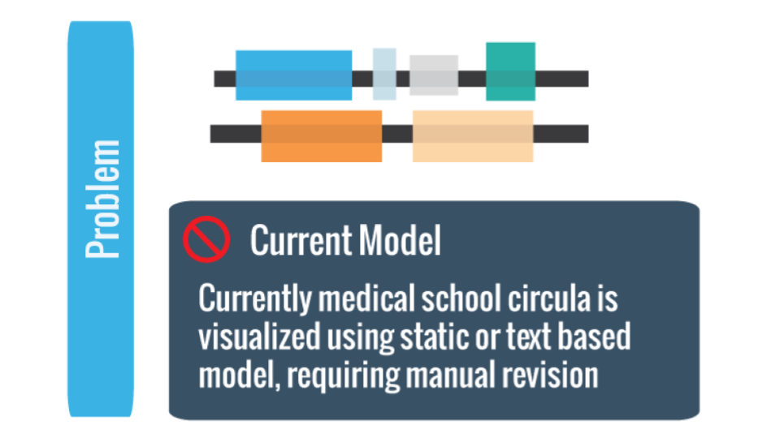
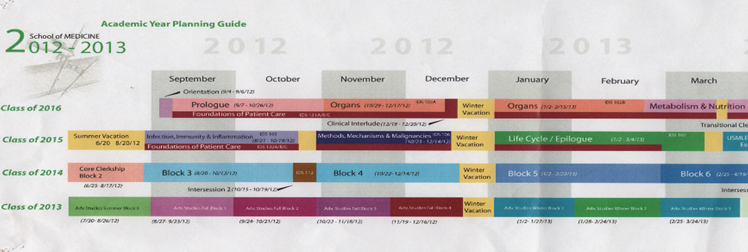
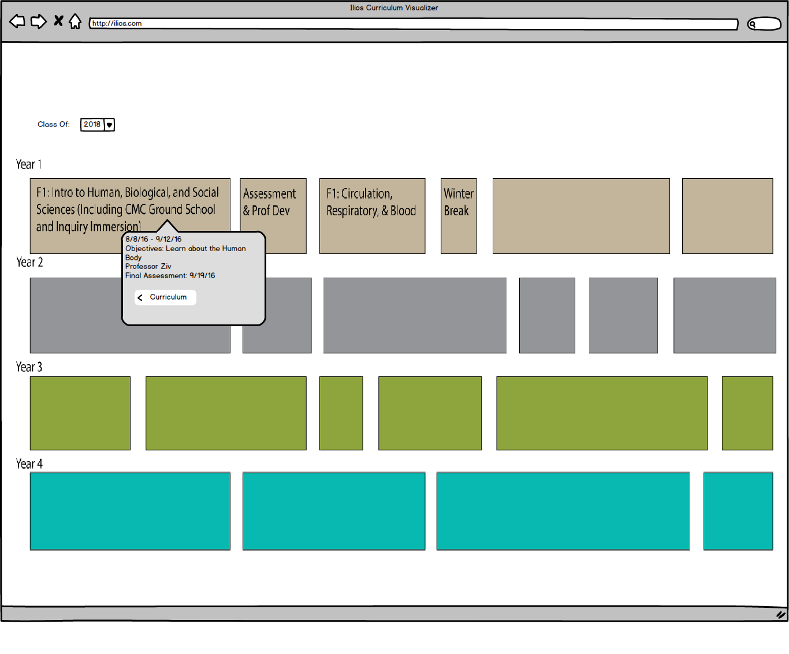
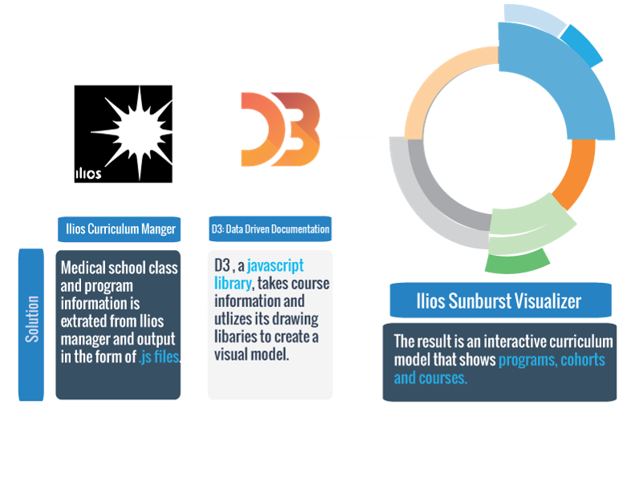

The Illios Curriculum Visualizer
Click to Demo

Problem Statement
- The client’s previous solution required manual, hand created revisions for each class year and for every change to the curriculum.
- Past visualizations did not adequately capture the depth or aim with comprehension of the information.

Example of orginal visualizations provided by client
Drafting & Design
- Initially our team set out to recreate the “swim-lane” diagrams provided by our client,
keeping an existing representation of data while adding automated redrawing and some interactivity.
Our team quickly realized the limited potential of this modality.

Intial swim-lane concept
- We then began by looking to other models that displayed nested information using interactive and scalable methods of presentation. Using the existing rich D3.js library, our team began experimenting with the
‘sunburst’ visualization. A data representation ideal for incongruent data sets such as medical school curriculum.
An additional, major consideration was the clients existing curriculum system utilized
JSON data-interchange format allowing direct integration into the client’s system.
Initial white board concept
- Our team took existing sunburst models,
deconstructed and tested different versions of the models to understand how data was mapped,
layered and displayed. We began working rapid prototypes to better understand the workings of the d3.js
(JavaScript) code and the provide client prototypes. Analyzing the structure of data generated from
the clients existing system and interviewing stakeholders we settled on creating a “4-layer path,”
from Program to Cohort to Competency and finally to Course level.
Allowing students to understand how each course fits with core curricular competency.
Prototype concept, displaying layering and mapping
Drafting & Design
-
The sunburst originally used JSON, however the default data model for Ilios is a Javascript file.
The visualization had to use the data model provided by the client, to overcome this challenge our
team modified the Sunburst model to accept Javascript files.
-
The visualization is built using Ember a JS framework that the clients Ilios Curriculum Manager application is
built on. The visualization utlizes the D3 Javascript library,
specifically the Zoomable Sunburst. The Sunburst is a hierarchical tree map
using a radial layout. The first layer, the root node, is the innermost layer of the
Sunburst. From there, it is a hierarchical visualization using paths.
Lessons Learned
- Working at distance with stakeholders (San Francisco to Irvine) can be rewarding and engaging when expectations are clearly set and good communication framework is set up.
- D3.js is an expansive and adapative visualization library that interfaces well with a variety of data types.
Final Product
- The final result is a solution that is:
- Interactive: Each piece is zoomable, uses breadcrumbs to track depth.
- Scaleable: Changing the data files associated with the visualizer, update & rebuild the model automatically.
- Intuitive: The sunburst design conveys time and builds up logically incorporating courses to learning outcomes. 